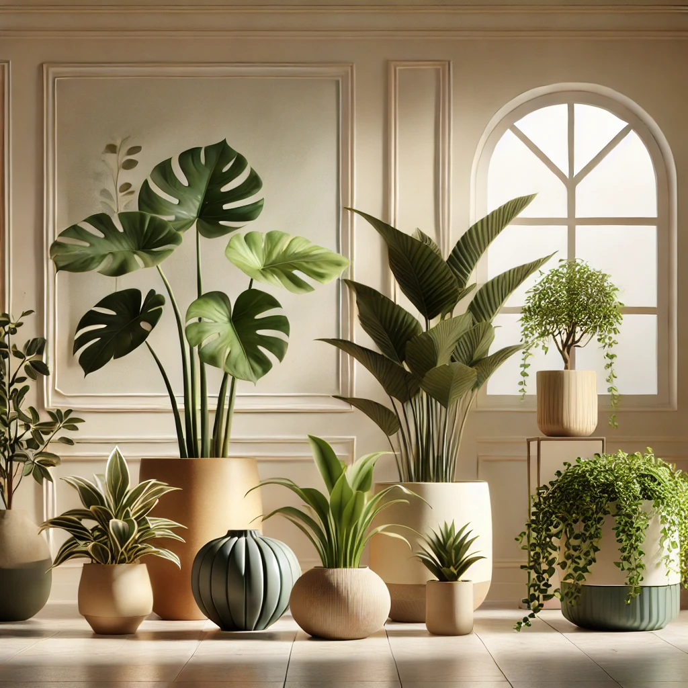

Existen diversas variedades de plantas decorativas que se adaptan a diferentes condiciones de luz y humedad. Entre las más populares para interiores se encuentran el Ficus lyrata, la Monstera deliciosa, el Pothos y la Sansevieria. Estas especies son fáciles de cuidar y requieren poca atención, lo que las hace ideales para cualquier hogar u oficina.
 VOLVER ANTERIOR